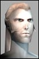
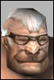
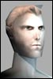
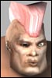

| Author | Thread |
korsan
Leet
 Registered: May 2002
Posts: 4 | Alpha mode for chests ;-) I've been in way to many teams where the puller loots all the bloody chests...or it's first come first serve...which isn't to fair IMHO. Some ppl even try opening chest in battle lol. Hate them rotten scoundrels. Anyway I'm not sure how hard it would be to implement something like this but i think if we can have an alpha mode for looting corpses why not one for looting chests? Anyone have any thoughts? Sure would be something I'd like to see.
peace,
-Korsan |
Thyrra
Supa LeetRegistered: Nov 2001
Posts: 901 | alpha on chests. overdue. |
Zeroshift
Supa LeetRegistered: Feb 2002
Posts: 740 | Alpha chests would be extremely complicated to implement.
The best solution is to team with a good fixer/agent/puller that will split the loot among those who need it.
There are some missions where only I bother looting the chests because no one wants to spend 20 tries with their lockpick and slow down the team. Whenever I find something of value to someone in the team I offer it up. |
korsan
Leet
Registered: May 2002
Posts: 4 | >There are some missions where only I bother looting the chests because no one wants to spend 20 tries with their lockpick and slow down the team. Whenever I find something of value to someone in the team I offer it up.
Hehe that's just fine and dandy Zeroshift, I'd love to team with you  but unfortunately not everyone is as virtuous as you. There are greedy buggas out there. From what it sounds like your high lvl im guessing. I think at higher lvl's, where you would be teaming with ppl you know or are guilded with it wouldn't be a problem. However at lower lvls you are teaming with ppl you don't really know. So things like chest hogging can happen. Nearly every team i've been in (im lvl 94 now) it ends up mainly first come first serve or the puller is a chest hoarder.
>Alpha chests would be extremely complicated to implement.
Or would it? I believe it wouldn't be that difficult. Surely great game coders like FC can accomplish this. But really, if FC can implement alpha with corpses then chests shouldn't be difficult either.
This is my idea of how it could work.
There are a certain number of chest randomly generated in a mission right. That number is divided by the # of ppl in the group. Only the person who has been assigned the chest is able to open it. If they open and close it or attempt to open it and fail..then the chest can be up for grabs. But until it is touched by the assigne, no one else can open it.
Not to complicated...
=)
-Korsan Last edited by korsan on May 7th, 2002 at 10:00 |
Leumas
Phear Leet
 Registered: Dec 2001
Posts: 189 | quote:
Originally posted by Zeroshift
Alpha chests would be extremely complicated to implement.
The best solution is to team with a good fixer/agent/puller that will split the loot among those who need it.
I dun think it wont be that complicated. We already have /team loot alpha. Just twist it abit, and we could also have /team chest alpha. Perhaps, adding a new counter.
Unfortunely, good fixer and agent are hard to find. Most agent and fixer I found in pick up group are often the one that rush for chest in the mission. Probably because they have green break and entry skills. |
Scott Adams
EleetRegistered: Apr 2002
Posts: 27 | I think it is a good idea too. |
SypherBoy
Eleet
 Registered: Apr 2002
Posts: 32 | I think it's a good idea.
If alpha chest loot isn't possible, then maybe make the chance of getting killed by a trap increase the more chests you open. hehe |
Xed LRK
Soleet
Registered: Jan 2002
Posts: 117 | Sounds like a good idea - I was with some guy the other day - who took so much stuff that his inventory became completely full (plus a backpack or two I imagine) - where as me, I had diddily squat, nothing!
he was a Engi and I took a Trimmer - saying I would give it back to him when he had cleared room...I sold it  |
Zeroshift
Supa LeetRegistered: Feb 2002
Posts: 740 | It would be quite complicated... imagine all the factors...
-- What happens if the person doesn't want their chest, does no one get it?
-- What happens if they can't open it? No one gets it?
-- How do you determine who gets what chest? It's not like alpha loot, you don't kill chests one after the other in order.
I am convinced the best course is just to team with someone that will share the loot. It's pretty common at higher levels to team with people that share the chest loot. Once you get higher up money comes easy, and the chest loot doesn't sell for much in comparison. |
xenomorph
Supa Leet
 Registered: Nov 2001
Posts: 281 |  ninja looters ninja lootersNormally I only do missions with people I trust and know. If it is a ql -40 mission I don't care since I have high lvl alts, but after lvl 60-70 I will only let me or someone I know/trust be team lead when doing missions, so that way if we catch someone ninja looting, wait till after mission is over and /kick %t from team. Reason I wait till mission is over is because I have encountered people that will train mobs onto you for kicking them from team.
The rules have always been simple, this is how I normally like chest looting to be.
1. declear 1 person to call out who loots what chest
2. loot chest in alphabetic order
3. 1 person loots all chests (fixer) and displays all items at end of mission (must be someone I know/trust) |
Thyrra
Supa LeetRegistered: Nov 2001
Posts: 901 | alpha chest could be triggered by opening the chest; similar to killing a mob.
if someone doesn't take their loot then it becomes public domain after a certain amount of time; like kills do.
seeing a chest window pop up should be enough of an indication to most people.
'it will get in the way of combat' :
this window should have minimize functionality built into it so that it doesn't get in the way of combat.
people can tell the rest to the team to quit f'ing opening chest while in combat or get kicked from the f'ing team. grrrr |
Zeroshift
Supa LeetRegistered: Feb 2002
Posts: 740 | Re: ninja looters quote:
Originally posted by xenomorph
Normally I only do missions with people I trust and know. If it is a ql -40 mission I don't care since I have high lvl alts, but after lvl 60-70 I will only let me or someone I know/trust be team lead when doing missions, so that way if we catch someone ninja looting, wait till after mission is over and /kick %t from team. Reason I wait till mission is over is because I have encountered people that will train mobs onto you for kicking them from team.
The rules have always been simple, this is how I normally like chest looting to be.
1. declear 1 person to call out who loots what chest
2. loot chest in alphabetic order
3. 1 person loots all chests (fixer) and displays all items at end of mission (must be someone I know/trust)
Kicking ninja looters is always an option, but I find "taking turns" on chest loot is cumbersome and time consuming.
At higher levels no one cares about chest loot because they get all the cash they need from a few missions. They are just looking for EXP. |
Bionitrous
Supa Leet
 Registered: Nov 2001
Posts: 1641 | Way, way, way, overdue. The chest should be treated just like any other monster. Successfully picking the lock should 'kill it' and experience should be rewarded at this time. 'Looting' rights should go to the next in turn for chest loot.
Likewise the experience for picking the lock should be greatly increased and shared between the team. This should be done concurrently with a massive increase in lockpicking difficulty.
If my 129 MP with dark dark blue B&E is picking chests in lvl200 missions there is something wrong.
Those professions with an affinity for 'killing' chests should be wanted in high level groups because nobody else can even get the chests open. |
Tboo
Soleet
Registered: Jan 2002
Posts: 47 | Heh Who has time for chests? I don't even have time to loot the corpses in team missions with a well oiled team. If I need a little cash I'll solo missions for it, then I can take the time to loot without holding anyone up.
- Tboo |
Leumas
Phear Leet
Registered: Dec 2001
Posts: 189 | quote:
Originally posted by Zeroshift
It would be quite complicated... imagine all the factors...
-- What happens if the person doesn't want their chest, does no one get it?
-- What happens if they can't open it? No one gets it?
-- How do you determine who gets what chest? It's not like alpha loot, you don't kill chests one after the other in order.
I am convinced the best course is just to team with someone that will share the loot. It's pretty common at higher levels to team with people that share the chest loot. Once you get higher up money comes easy, and the chest loot doesn't sell for much in comparison.
- What happen if someone didn't loot a corpse in /team loot alpha?
- /point to list 1. If their b&e are too low to open a chest withint the time limit. It's their own fault.
- Basically, it's like alpha loot. IF the counter is trigger, ie add 1, after a mob is killed. Then, they could also add another counter that will triggle once a chest is open.
I am sure there are alot of nice player out there that follow the rule and willing to share the loot. Especially, if you are grouping daily with guilder or RL friend. But, consider there are people out there that in a small guild and play during offpeak hour. Those are the poeple that have to rely on pick up group which mostly consist of a bunch of ninja looter.
I believe the best method are still hardcoding the system so that nobody could loot a chest out of his/her right. This would be much better then depending on a person conscious. Not much people have conscious in a game, much less when dealing with stranger.
To be frank, Zeroshift. I have no idea why you would oppose this idea. What possible lost could it bring to you? Last edited by Leumas on May 8th, 2002 at 09:43 |
Leumas
Phear Leet
Registered: Dec 2001
Posts: 189 | Re: Heh quote:
Originally posted by Tboo
Who has time for chests? I don't even have time to loot the corpses in team missions with a well oiled team. If I need a little cash I'll solo missions for it, then I can take the time to loot without holding anyone up.
- Tboo
quote:
Originally posted by Zeroshift
At higher levels no one cares about chest loot because they get all the cash they need from a few missions. They are just looking for EXP.
Currently in test server, alot of item are introduce that intent to be drop in a team mission. That mean you couldn't rely on the old single mission to archive what you want anymore. In fact, you are then force to group for team mission for your class specific item. I dun know what prof. you are. I do know I would be pissed if an a$$hole ninja loot a MA only item and proceed to sell it back to me in a outrages prices. Last edited by Leumas on May 8th, 2002 at 09:36 |
XtroXtreme
Supa Leet
Registered: Nov 2001
Posts: 809 | Good idea, and just open a window for whoever is in turn for that chest whenever anyone open a chest (that way the best one in B&E can get some bonus exp for the skill by open all chest for the group). |
Leumas
Phear Leet
Registered: Dec 2001
Posts: 189 | This bump is provided by Leumas Inc. |
Pie314
Supa Leet
Registered: Mar 2002
Posts: 342 | bump to everyone elses ideas...
/me adds his own
The game already knows how to distinguish if a room has a certain entity in it. (when you walk into a room something in the code knows you are there and lights up that room on your minimap)
I say adopt that code to checkk for monsters. That way you can have it so that all the monsters/npc in a room must be destroyed before you are allowed to open chests in that room.
this would at least force teh ninja looters to kill whats in the room first. Then its a FFA for the chests |
Kasimir
Supa Leet
 Registered: Mar 2002
Posts: 412 | Thumbs up to Pie, but let me add..
make it so anyone can open/unlock chests, but only the leader can take items out of it..then the leader can distibute fairly...we just have to assume that person is reliable. |
All times are GMT.


 Last Thread Next Thread
Last Thread Next Thread 
 May 7th, 2002 05:36
May 7th, 2002 05:36